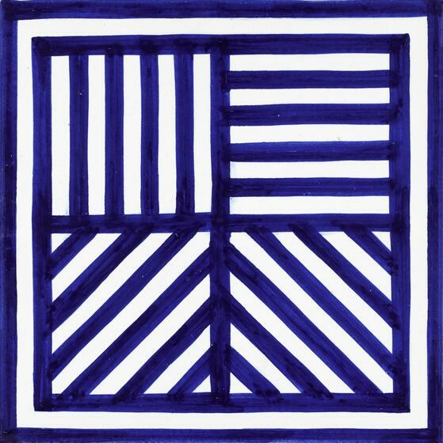
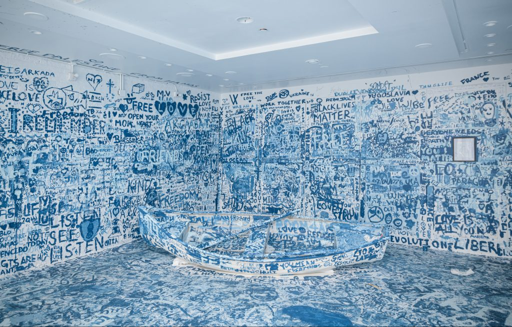
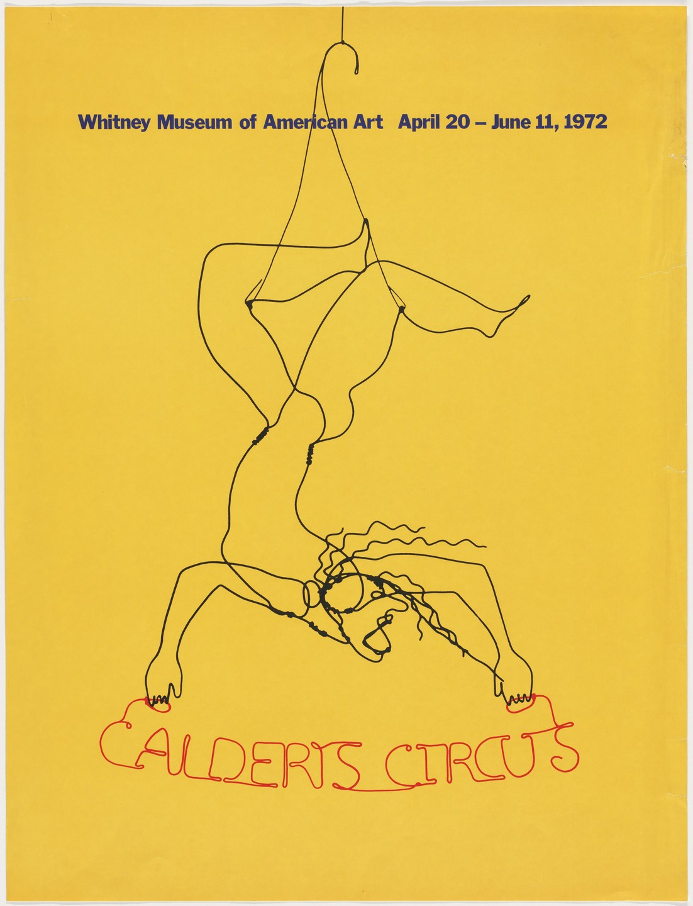
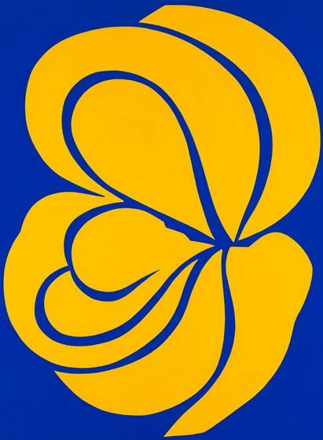

Press a Button for Art

❮
❯
 Carmen Herrera, "Iberic, "1949
Carmen Herrera, "Iberic, "1949
 Ellsworth Kelly, “Red-Orange (Rouge-Orange) from Suite of Twenty-Seven Color Lithographs,” 1964–65
Ellsworth Kelly, “Red-Orange (Rouge-Orange) from Suite of Twenty-Seven Color Lithographs,” 1964–65
 Henri Matisse, “The Red Studio,” Issy-les-Moulineaux, fall 1911
Henri Matisse, “The Red Studio,” Issy-les-Moulineaux, fall 1911
 Jorinde Voigt, “13 Views RED from Gardens of Pleasure,” 2011
Jorinde Voigt, “13 Views RED from Gardens of Pleasure,” 2011
 Kevin Appel, “House - South Rotation Red: 1 East,” 2000
Kevin Appel, “House - South Rotation Red: 1 East,” 2000
 Louise Bourgeois, “The Red Shoes,” 2005
Louise Bourgeois, “The Red Shoes,” 2005
Mark Rothko, “No. 21,” 1949
 Nicolaes Maes, “The Lacemaker,” 1656
Nicolaes Maes, “The Lacemaker,” 1656
 Peter Halley, “Red Cell with Conduit,” 1982
Peter Halley, “Red Cell with Conduit,” 1982
 Ralston Crawford, “Red and Black (U.S.S. Nevada),” 1949
Ralston Crawford, “Red and Black (U.S.S. Nevada),” 1949
 Ad Reinhart, “Red Painting,” Buffalo, New York, 1952
Ad Reinhart, “Red Painting,” Buffalo, New York, 1952
Takeshi Kawashima, “Red and Black A-A from an untitled series,” 1968
Betye Saar, “Mother and Children In Blue,” 1998
CINGA SAMSON, AMADODA AKAFANI, AFANA NGEENTSHEBE ZODWA “MEN ARE DIFFERENT THOUGH THEY LOOK ALIKE”
FEBRUARY 22, 2020
DANIEL ARSHAM, “Cave of the Sublime,” Iceland, 2020
 Joseph Marioni, “Blue Painting,” 1999
Joseph Marioni, “Blue Painting,” 1999
 Katharina Fritsch, “8th Poster (Ibiza) (for Parkett, no. 100/101),” 2006, published 2017
Katharina Fritsch, “8th Poster (Ibiza) (for Parkett, no. 100/101),” 2006, published 2017
 Lee Ufan, “From Line,” 1974
Lee Ufan, “From Line,” 1974
 Louise Bourgeois, “Triptych for the Red Room,” 1994
Louise Bourgeois, “Triptych for the Red Room,” 1994
 Marcel Duchamp, “Rotoreliefs (Optical Disks),” 1935, published 1953
Marcel Duchamp, “Rotoreliefs (Optical Disks),” 1935, published 1953
 Mary Cassatt, “Lady at the Tea Table,” 1883-85
Mary Cassatt, “Lady at the Tea Table,” 1883-85
 Paul Cézanne, “The Card Players,” 1890–92
Paul Cézanne, “The Card Players,” 1890–92

Sol LeWitt, “Untitled (Lines in Four Directions, Blue),” 1989
 Vincent van Gogh, “The Starry Night,” Saint Rémy, June 1889
Vincent van Gogh, “The Starry Night,” Saint Rémy, June 1889

Yoko Ono, “Add Color (Refugee Boat),” (1960/2019)
 Yves Klein, “Blue Monochrome,” 1961
Yves Klein, “Blue Monochrome,” 1961
 Yves Klein, “ANTHROPOMETRIE DE L’EPOQUE BLEUE, (ANT 82),” 1960<
Yves Klein, “ANTHROPOMETRIE DE L’EPOQUE BLEUE, (ANT 82),” 1960<

Alexander Calder, “Calder's Circus,” Whitney Museum of American, Art April 20-July 11, 1972
Amoako Boafo, “Yellow Turtleneck,” 2018
 Conrad Marca-Relli, “Yellow Collage,” 1960
Conrad Marca-Relli, “Yellow Collage,” 1960

Jack Youngerman, “Blue April Yellow,” 1970
 Jane Kent, “Untitled [black and yellow],” 1986
Jane Kent, “Untitled [black and yellow],” 1986
 Jean Honore Fragonard, “Roman Interior,” 1760
Jean Honore Fragonard, “Roman Interior,” 1760
 Josef Albers, “Homage to the Square - Orange and Yellow,” 1970
Josef Albers, “Homage to the Square - Orange and Yellow,” 1970
 MADSAKI, “THE VELVET UNDERGROUND & NICO 2,” 2015
MADSAKI, “THE VELVET UNDERGROUND & NICO 2,” 2015
Henri Matisse, “Study for ‘The Dance,’” 1932
Takashi Murakami, “An Homage to Monogold 1960 A,” 2012
Takeo Yamaguchi “oeuvre, Yellow Quadrangle,” 1959